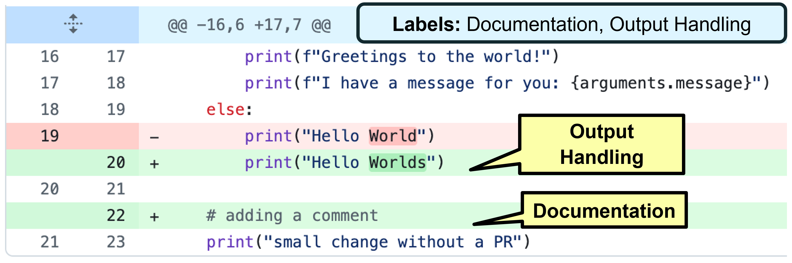
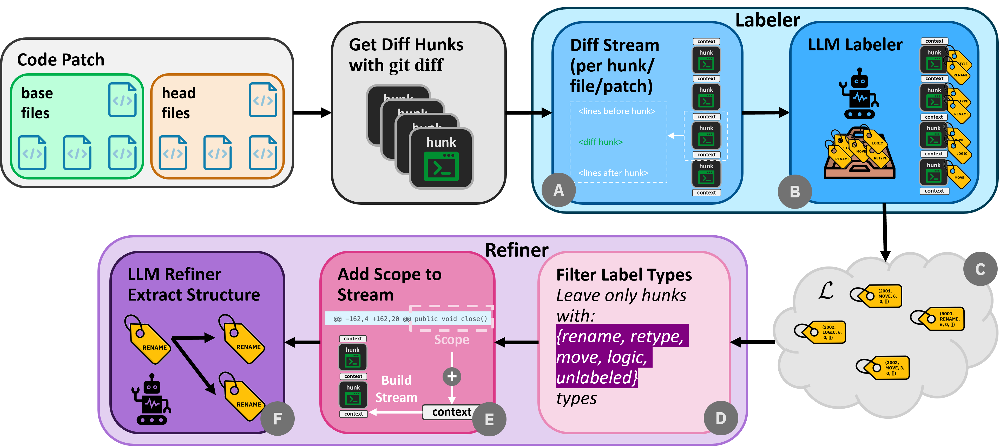
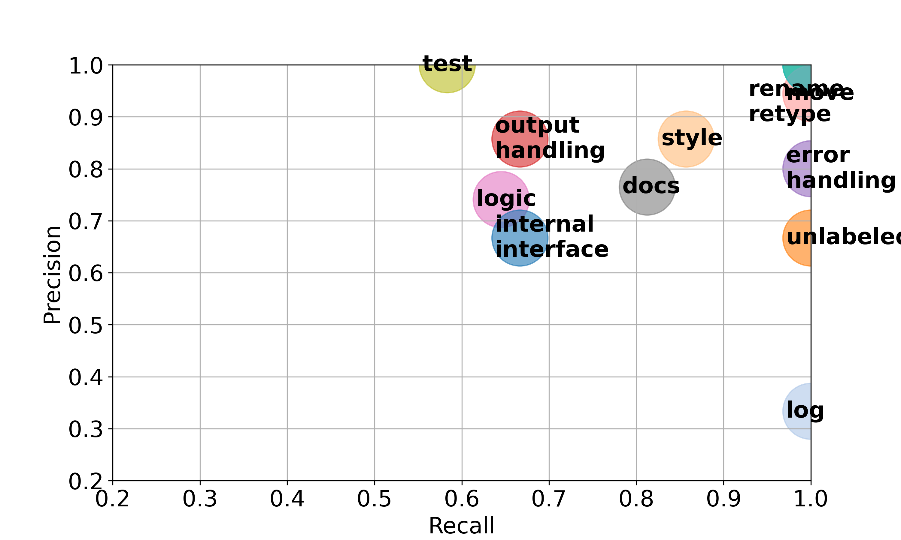
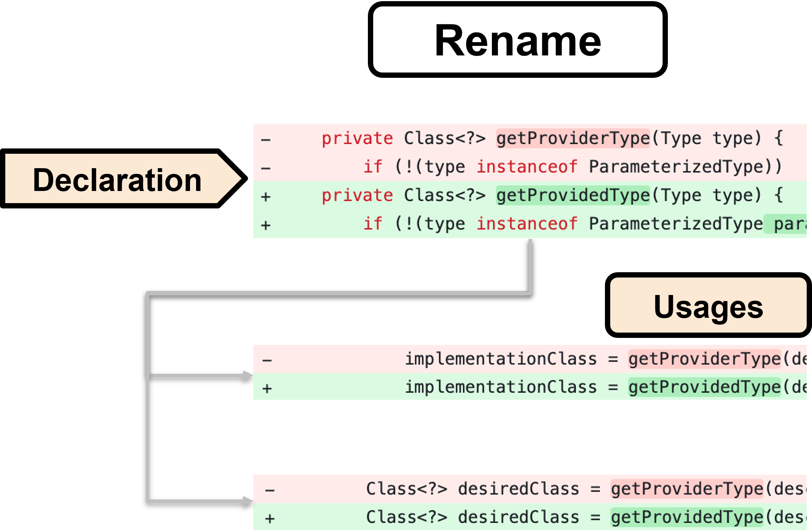

This paper shows that LLMs can produce structured, taxonomy-based labels for code changes in patches, achieving high recall/precision and capturing cross-hunk relationships, offering a flexible complement to static analysis.
本文提出了一种基于大语言模型的两阶段流水线，能够为代码补丁中的差异块生成基于分类法的结构化标签，在召回率和精确率上分别达到84%和81%。该方法无需静态分析基础设施，支持跨语言和少样本提示，并能捕获跨差异块的关系（如重命名传播），为自动化代码审查工作流提供了新的可能性。
Deep Note — structlabel
Key Takeaways - LLMs can label diff hunks with taxonomy-based change types (rename, move, interface change, etc.) achieving up to 84% recall and 81% precision. - A two-stage pipeline first assigns labels to individual hunks, then refines them to capture cross-hunk relationships (e.g., rename propagation) and semantic attributes (e.g., old/new names). - The approach is language-agnostic, customizable via few-shot prompting, and requires no static-analysis infrastructure. - Structured labels enable downstream automation (filtering, prioritization, analytics) beyond free-text summaries.
0) Metadata
- Title: Beyond Summaries: Structure-Aware Labeling of Code Changes with Large Language Models
- Alias: structlabel
- Authors: Bar Weiss, Antonio Abu-Nassar, Adi Sosnovich, Karen Yorav
- arXiv ID: 2605.26100
- Published:
- Links:
- Abs: https://arxiv.org/abs/2605.26100
- HTML: https://arxiv.org/html/2605.26100v1
- PDF: https://arxiv.org/pdf/2605.26100
- Tags: code-review, llm-labeling, diff-hunk-classification, structure-aware, few-shot-prompting
- Domains: system_safety
- Rating: 3/5 (base 1 + quality 1 + observation 1)
1) Why-read
This paper shows that LLMs can produce structured, taxonomy-based labels for code changes in patches, achieving high recall/precision and capturing cross-hunk relationships, offering a flexible complement to static analysis.
2) CRGP
C — Context
Code review is a bottleneck in modern software engineering, especially with AI-assisted code generation. Existing LLM-based review tools focus on free-text summarization and comment generation, which are hard to integrate into automated workflows. Static analysis tools for change classification are language-specific and costly to maintain.
R — Related work
- RefactoringMiner, GumTree, ChangeDistiller: AST-based tools for detecting refactoring and structural edits, but language-specific and hard to extend.
- LLM-based code assistants (Codex, Claude Code) and review summarization (Sun et al., Codedog): produce free-text outputs, not structured labels.
- Few-shot prompting for code tasks (Brown et al., Wei et al., Kojima et al.): in-context learning enables flexible classification without fine-tuning.
G — Gap
No prior work systematically evaluates LLMs for taxonomy-based labeling of diff hunks, including cross-hunk relationships and semantic attributes. Existing change-classification tools rely on static analysis, which is language-specific and difficult to customize, while LLM-based code review outputs are unstructured.
P — Proposal
A two-stage LLM pipeline: (1) assign taxonomy labels to each diff hunk, (2) refine labels to capture structural relationships (e.g., rename propagation) and extract semantic attributes (e.g., old/new names). Uses few-shot prompting for language-agnostic, customizable labeling without static-analysis overhead.
---
4) Experiments
Main results
Best configuration (GPT-4 with full context) achieves 84% recall and 81% precision on a manually curated benchmark of natural and synthetic patches. High accuracy in extracting relational and attribute metadata.
Ablation
Providing full patch context (old/new file + diff) improves recall by ~10% over hunk-only context; few-shot examples boost precision by ~5% over zero-shot.
Limitations
['No formal guarantees; accuracy may degrade on unseen languages or complex refactorings.', 'Benchmark is manually curated and may not cover all real-world patch types.', 'Pipeline relies on LLM output parsing; errors in attribute extraction can propagate.']
5) Why it matters
- Enables structured, automation-friendly code review workflows that can filter/prioritize patches by change type.
- Demonstrates LLMs can capture cross-hunk relationships (e.g., rename propagation) without static analysis, relevant for refactoring detection.
- Language-agnostic labeling reduces engineering cost for multilingual projects.
6) Next steps
- [ ] Evaluate on larger, diverse benchmarks including non-English code and more languages.
- [ ] Combine LLM labeling with static analysis for hybrid approaches (formal guarantees + flexibility).
- [ ] Extend taxonomy to semantic/intent-level changes (e.g., bug fix, feature addition).
- [ ] Integrate into CI/CD pipelines and measure impact on reviewer efficiency.
7) Scoring
3/5 = base 1 + quality 1 + observation 1
超越摘要：利用大语言模型对代码变更进行结构感知标注
主要结论 - 大语言模型能够以基于分类法的变更类型（如重命名、移动、接口变更）标记差异块，召回率高达84%，精确率达81%。 - 两阶段流水线先为单个差异块分配标签，再精炼标签以捕获跨差异块关系（如重命名传播）和语义属性（如旧/新名称）。 - 该方法语言无关，可通过少样本提示定制，且无需静态分析基础设施。 - 结构化标签支持下游自动化（过滤、优先级排序、分析），超越了自由文本摘要的能力。
1) 阅读理由
本文的核心主张是：大语言模型能够为代码补丁生成基于分类法的结构化标签，关键观察是该方法在捕获跨差异块关系方面表现优异，且无需静态分析。
2) CRGP（背景 / 相关工作 / 差距 / 方案）
背景：代码审查是现代软件工程的瓶颈，尤其是在AI辅助代码生成背景下。现有基于大语言模型的审查工具侧重于自由文本摘要和评论生成，难以集成到自动化工作流中。用于变更分类的静态分析工具语言特定且维护成本高。
相关工作：RefactoringMiner、GumTree、ChangeDistiller等基于抽象语法树的工具可检测重构和结构性编辑，但语言特定且难以扩展；基于大语言模型的代码助手（如Codex、Claude Code）和审查摘要工具（如Sun等人、Codedog）生成自由文本输出，而非结构化标签；少样本提示在代码任务中的应用（如Brown等人、Wei等人、Kojima等人）表明上下文学习无需微调即可实现灵活分类。
差距：尚无工作系统评估大语言模型对差异块进行基于分类法的标签标注，包括跨差异块关系和语义属性。现有变更分类工具依赖静态分析，语言特定且难以定制，而基于大语言模型的代码审查输出是非结构化的。
提议：一个两阶段大语言模型流水线：（1）为每个差异块分配分类法标签；（2）精炼标签以捕获结构关系（如重命名传播）并提取语义属性（如旧/新名称）。使用少样本提示实现语言无关、可定制的标签标注，无需静态分析开销。
3) 实验
最佳配置（GPT-4，完整上下文）在人工策划的自然和合成补丁基准上实现了84%的召回率和81%的精确率。在提取关系性和属性元数据方面具有高准确性。
消融实验
提供完整补丁上下文（旧/新文件+差异）相比仅差异块上下文，召回率提升约10%；少样本示例相比零样本，精确率提升约5%。
局限性
无形式化保证；在未见过的语言或复杂重构上准确性可能下降。基准是人工策划的，可能未覆盖所有真实世界的补丁类型。流水线依赖大语言模型输出解析；属性提取错误可能传播。
4) 重要性
- 支持结构化、自动化友好的代码审查工作流，可按变更类型过滤/优先级排序补丁。
- 证明大语言模型无需静态分析即可捕获跨差异块关系（如重命名传播），对重构检测有重要意义。
- 语言无关的标签标注降低了多语言项目的工程成本。
5) 下一步
- [ ] 在更大、更多样化的基准上评估，包括非英语代码和更多语言。
- [ ] 将大语言模型标签标注与静态分析结合，形成混合方法（形式化保证+灵活性）。
- [ ] 扩展分类法以涵盖语义/意图级变更（如错误修复、功能添加）。
- [ ] 集成到CI/CD流水线中，并衡量对审查者效率的影响。




